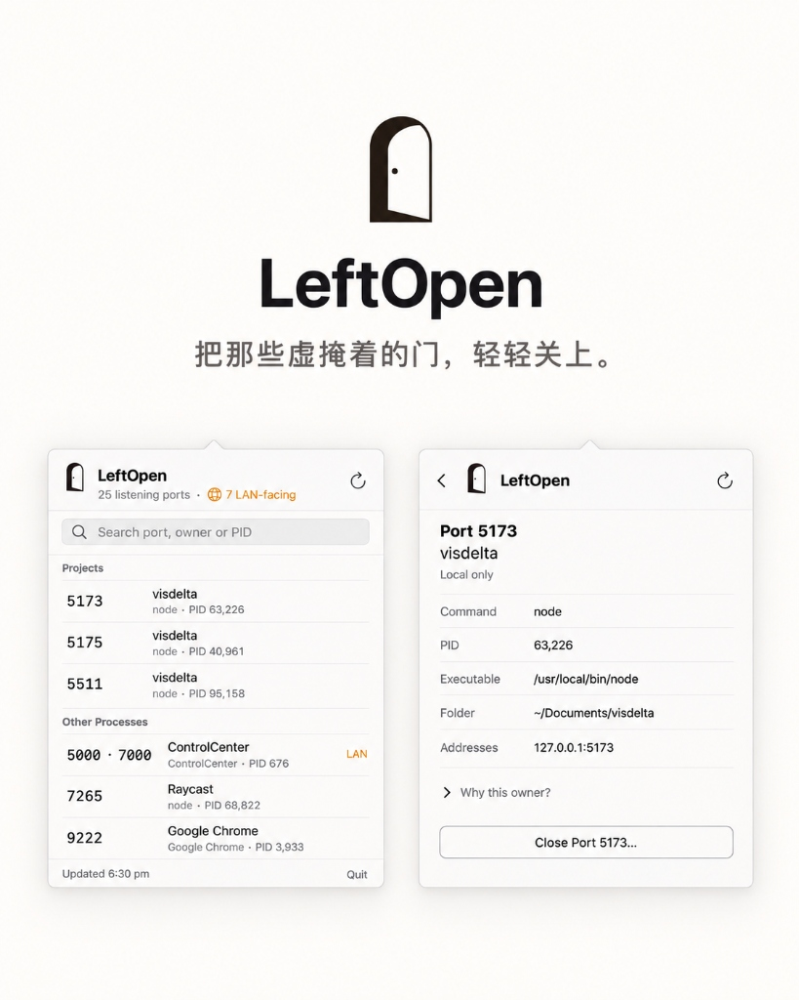

把那些虚掩着的门，轻轻关上。
See what your tools left running on localhost, and gently close them.

当我并行让多个 agent 写代码时，开发服务器和测试服务会不断启动，监听不同的端口。忙完一天，电脑里往往留下不少还开着的服务。
现有工具要么太复杂，要么只能告诉你“端口被占用”，却说不清它到底属于哪个进程、可能来自哪个项目。
所以我做了 LeftOpen。它安静地待在菜单栏里，帮你一眼看清正在监听的端口、对应的进程，以及可能关联的项目。确认之后，你可以关闭那些不再需要的服务。
“把那些虚掩着的门，轻轻关上。”
工程归属推断
解析 .git、package.json、pyproject.toml 与应用 Bundle，精准还原监听背后的真实项目，告别千篇一律的 node 或 python。
克制温和关闭
完整预览关联端口，关闭前二次校验进程身份与启动时间；仅发送 SIGTERM 礼貌退出，不擅自升级为暴力 kill。
局域网暴露警示
清晰识别监听地址是仅限本机（127.0.0.1）还是公开至局域网（0.0.0.0 或 LAN IP），防范开发接口意外暴露。
原生零常驻
纯原生 SwiftUI MenuBarExtra 构建。零后台守护进程、零遥测收集、无 Dock 驻留，常驻菜单栏即点即开。
$ leftopen list
LEFT OPEN
26 listening ports · 17 processes · 1 projects · 8 LAN-visible
MY PROJECTS (2)
PORT PID OWNER PROCESS SCOPE
5173 76344 visdelta node LOCAL
↳ ~/Documents/visdelta
5511 4999 visdelta node LOCAL
↳ ~/Documents/visdelta
APPLICATIONS (16)
PORT PID OWNER PROCESS SCOPE
5000 696 ControlCenter Control LAN
9222 36824 Google Chrome Chrome LOCAL
LOCAL = this Mac only · LAN = may be reachable from your local network为什么不做一键暴力 Kill？
后台服务可能持有未写入数据库的数据。LeftOpen 坚持通过 SIGTERM 请求进程自行清理退出，关闭前还会呈现共享端口，避免误连带其它服务。
后台是否有常驻守护进程？
没有。LeftOpen 不注册 LaunchDaemon / LaunchAgent，也不启动网络服务，仅在面板唤起与定时刷新时执行本地只读扫描。
安全与公证
应用由 Apple 开发者身份签名，并已通过 Apple Notary Service 官方公证装订，在 macOS Sonoma 上下载即可直接打开。